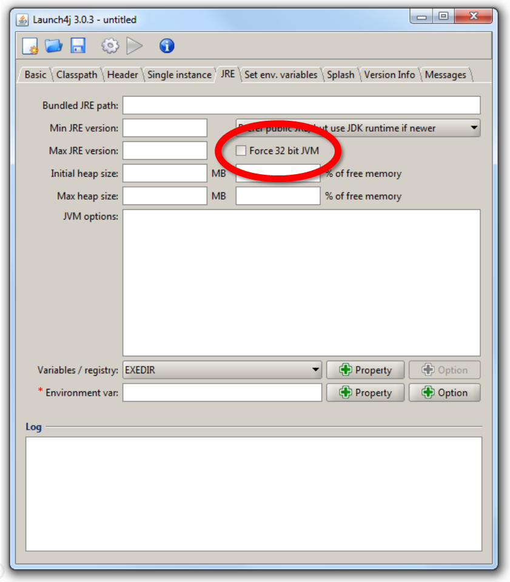

launch4j
I've forked the original project from http://launch4j.sourceforge.net/, to solve one problem: launch4j either required to pick up a specific JDK / JRE as hardcoded in the configuration, or it would allow to search for a Java Runtime on the target machine. However, if your project would use native libraries, then this automatic search would not allow you to configure that a 32bit runtime should be found first.
